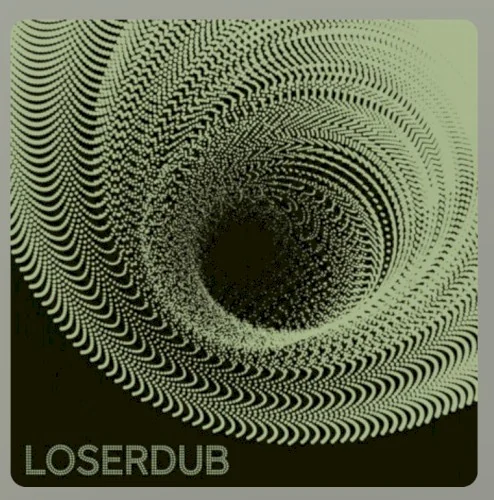
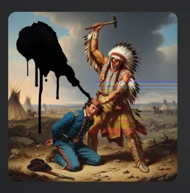
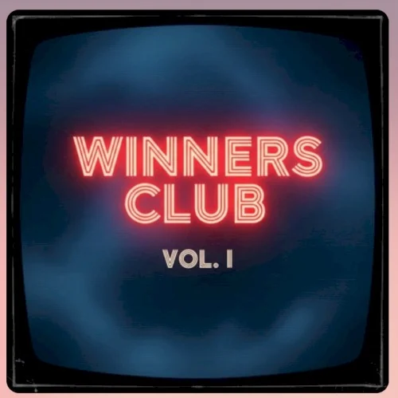

loserdub
loserdub is the human-only recording project of Justin Ray, a songwriter and audio engineer from East Lansing, Michigan. Live guitar, analog synths and the pitch drift of tape give the indie electronic records their sound.
Start with Superposition. Across ten tracks, it moves from the two-and-a-half-minute opener “TakeOFF” through the 33-second interlude “Somewhere” to “Discontinuum.” For an earlier release, try FeedBack Loop.

Albums & EPs
Trust Node Logic lists the dates and track orders for the linked MusicBrainz editions. Open a tracklist for recording credits and streaming editions.
| Release | Issued | Tracklist |
|---|---|---|
 SuperpositionAlbum (10 tracks, 26 min)
SuperpositionAlbum (10 tracks, 26 min)
|
10 tracks
|
|
|
 FeedBack LoopAlbum (9 tracks, 26 min) |
9 tracks
(LANDR Cat: LR-3021703 / Barcode: 057914748771) Listen to FeedBack Loop on Apple Music ↗ The US streaming edition opens with “U - Loze” and closes with “Game Over.” |
|
|
 Thought DistortionsEP |
3 tracks
Listen to Thought Distortions on Apple Music ↗ Apple Music lists the instrumental edition as a three-track single. |
|
| Training DataEP | 6 tracks
(Also coupled with studio cuts Sometimes I Might & Bussing) |
|
|
 Winners Club, Vol. IAlbum (6 tracks) |
6 tracksListen to Winners Club, Vol. I on Apple Music ↗ Apple Music lists the six-track streaming edition as an EP. |
Singles, collaborations & archive cuts
| Year | Release / Track Title | Format / Notes |
|---|---|---|
| 2026 | Detroit ↗ | Single |
| 2026 | Back Again ↗ | Single (Released May 29, 2026) |
| 2026 | Latent State | Single (Collaboration: LoserDub & Disarray) |
| 2026 | Monseigneur ↗ | Single |
| 2026 | My Problem ↗ | Single |
| 2026 | Mystery Box ↗ | Single |
| 2026 | GOSPEL ↗ | Single |
| 2026 | Meant to Be ↗ | Single |
| 2026 | Plucked Up ↗ | Single |
| 2026 | Until ↗ | Single |
| 2026 | Adventure ↗ | Single |
| 2026 | Proud Of U ↗ | Single |
| 2026 | Isolation ↗ | Single |
| 2026 | Sitari | Single |
| 2025 | Golden Rules ↗ | Single |
| 2025 | In A Dream ↗ | Single |
| 2025 | Dream Machine | Single |
| 2024 | Rooms ↗ | Single |
Listen & follow
Catalog credits
| Release entries | link to | MusicBrainz editions |
|---|---|---|
| Front covers | come from | the Cover Art Archive |
Published · Updated